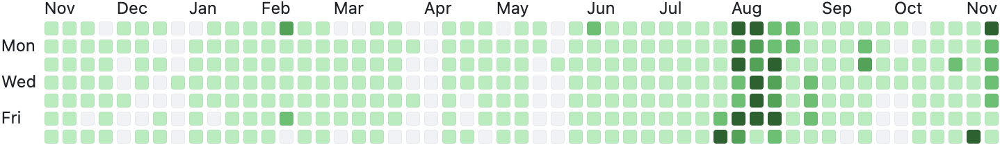

Hi 👋 I'm Jeremy and I work at the intersection of software, business and AI.
I'm a senior developer who has spent the last 20 years building organisations that help others, most notably Exercism, Jiki and Kaido.
I've been using AI for 20 years. My undergrad degree was in AI (2005), I've used AI throughout my career, notably leading two UK Government-funded AI R&D projects, and creating a patented error-detection deep-learning algorithm used in interventional cardiology.
My core skillset involves software development, AI, product design, strategy and leadership.
I started coding when I was 8, started selling what I was making when I was 14, and I've continued on that path ever since!
Artificial Intelligence
Patenteddeep-learning algorithm
BScin Artificial Intelligence
2×UK Government R&D projects
I've been working with AI for 20 years.
I have a degree in Computer Science and Artificial Intelligence (from before it was cool) from the University of Birmingham.
From 2017-19 I worked with some of the world's leading cardiologists to create a patented AI-powered real-time error-detection algorithm used during interventional cardiology. It detects when surgeons start making micro-mistakes that, if continued, have serious and often fatal consequences. It outperforms doctors at error detection, is patented in the US, Japan and South Korea, and is currently in the process of being licensed for use in industry.
I've also led two Innovate UK projects, and these days I'm building agentic systems at Exercism and Jiki.
Ventures
For the last 20 years, I've built organisations that help others, primarily through my Venture Lab, Thalamus.
ExercismCo-founder & CEO, 2017–An education platform teaching programming languages through hands-on problem solving and mentorship.
JikiFounder & CEO, 2024–A learn-to-code platform built for beginners, junior developers, and vibe-coders.
KaidoCo-founder & CTO, 2017–A team culture and employee wellbeing business.
MeducationCo-founder, CTO then CEO, 2008–2016An education network for medical students.
Exercism
3.1M+students
£1.5M+raised in donations
20,000+volunteers
I'm the co-founder and CEO of Exercism, an education platform teaching programming languages through hands-on problem solving and mentorship.
We have grown to 3.1M+ users and delivered 550M+ minutes of free education and mentoring. We are a nonprofit, funded by donations, that places a strong focus on being inclusive and welcoming. Our community has grown to 19,000+ mentors and 5,500+ code contributors. Our code is open source and made up of 440+ GitHub repositories.
I regularly create videos that discuss our journey and provide insights into the development of Exercism on Exercism's YouTube channel.
Jiki
100+hours of free content
3months from zero to competent
20languages the site is available in
Launched in 2026, Jiki is a learn-to-code platform built for beginners, junior developers, and vibe-coders looking to know a little more about what's going on. It grew out of Exercism: hundreds of complete beginners were signing up every day to a platform that wasn't built for them, and that felt like a failure I wanted to fix. Jiki teaches programming the way I learned it as a kid, by building things from day one (games, animations, tools) rather than watching videos and ticking off quizzes.
Under the hood, I've written custom interpreters for JavaScript and Python that strip out the foot-guns and gradually unlock features as learners progress, so people aren't fighting historic language baggage while they're trying to learn to think. Everything is multilingual from the ground up, and the core platform is free, with a small Freemium tier (PPP-adjusted) for extras.
The mission is the same one that drives Exercism, social mobility through programming, just aimed at the people Exercism couldn't yet serve.
Kaido
500k+employees engaged
250+SME/enterprise customers
96%would recommend
Kaido is a team culture and employee wellbeing business. We help organisations take better care of their employees, and improve the culture and morale in their workplaces.
We work with a diverse range of businesses from tiny startups to large multinationals such as HSBC, Accenture and the BBC. Of particular personal pride is our work within the NHS, helping frontline staff across the UK, including internationally renowned hospitals such as Great Ormond Street Children's Hospital.
We help individuals explore how they can improve their physical health, mental health, sleep and nutrition, with a focus on sustainable and non-judgemental behaviour change.
Meducation
200k+members
15%of the world's medical students
$1Mraised
I co-founded Meducation, an education network for medical students. It grew to over 200,000 members, 15% of the world's medical students, and our clients included Elsevier, Oxford University Press and the Medical Protection Society.
I built the first version of the platform, and later moved from CTO to CEO. As part of our work, I led a government-supported project building real-time NLP and recommendation algorithms across thousands of pieces of medical content.
Open source
50,000+GitHub contributions
Top 40most active GitHub users in the UK
1.4M+downloads of my libraries
I'm one of the world's most prolific open source developers, with over 50,000 contributions on GitHub over the last 15 years.
For the last decade, I've led Exercism, an open source organisation with 440+ public repositories and 5,500+ contributors.
I've also built and maintain a wide variety of open source libraries, such as Propono and Mandate, which have been downloaded 1.4M+ times.
You can explore my contributions on my GitHub.
My last 12 months on GitHub
Speaking
I regularly release a mixture of technical content and interviews on Exercism's YouTube channel. There are also numerous videos of me speaking at conferences online. Here is a varied selection.


Podcasts
Here are a few fun podcast episodes I've appeared on. If you'd like to feature me on your podcast, please get in touch.
Personal
I'm originally from the UK but now live nomadically, moving countries every few months. I love exploring new cultures and understanding how people think and act differently in different places.
I'm a big reader, and absorb a mixture of any non-fiction that interests me, along with lots of fantasy and sci-fi. I'm a boulderer, yogi, and big coffee geek. Over the last couple of years I've also got very into chess and photography.
I've mentored many founders and served as a non-exec director at Beatfreeks.